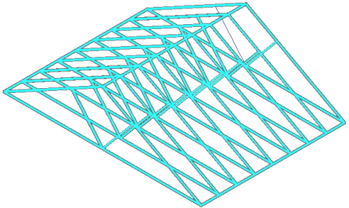

Add or remove study geometry using the Define command
You can use the Simulation tab→Geometry group→Define command to add and remove parts, features, and components from an assembly study, and from multibody part and sheet metal models. You can add and remove frame members from a structural frames assembly.
In a study of a large assembly with many parts, you also can temporarily suppress bodies from consideration in the study, and then restore them or remove them from the study. For more information, see Suppress, unsuppress, and remove study geometry.
Add or remove part, sheet metal, and assembly geometry
-
Choose Simulation tab→Geometry group→Define .
The Define command bar options that are available are based on your model and document type.
-
Do one of the following to select one or more parts, occurrences, surfaces, and mid-surfaces that are in a simplified model and in the designed model. You also can mix and match your selections.
-
Add geometry to an existing study by selecting bodies that are not already highlighted. You can select from PathFinder or from the graphics window.
In an assembly, you may have to activate parts or occurrences to make them selectable. You can activate a part or subassembly automatically by clicking it in the graphics window. You also can use the Home tab→Select group→Activate command on the ribbon.
-
Remove geometry from the study by deselecting highlighted bodies or elements.
-
Select all geometry in a multibody part model or assembly using the Select All button on the Define command bar.
Tip:To include a part that is marked as suppressed (
 ), you must first unsuppress it using the Unsuppress shortcut command.
), you must first unsuppress it using the Unsuppress shortcut command.
For more information, see Selecting occurrences for studies and Create a study using a simplified model.
-
-
On the Define command bar, click Accept.
Add or remove frame members
-
Open the Frame environment—Choose the Tools tab→Environs group→Frame command.
-
Select a frame feature.
-
On the command bar in the graphics window, click Edit Definition
 .
. -
On the Frame command bar, choose the Select Path Step.
-
Do one of the following:
-
Remove members from a frame feature by pressing the Ctrl key while selecting highlighted member(s). Click Accept.
Members removed from the study change from beam element display to wireframe display.

-
Add new members to the study:
-
Delete the existing frame.
-
Create a structural frame that includes the new members.
-
Choose the Simulation tab→Geometry group→Define command and select the new frame feature.
-
On the Define command bar, click Accept.
-
-